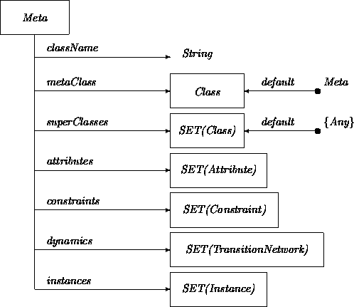
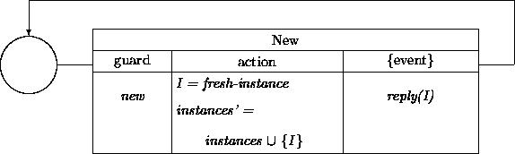
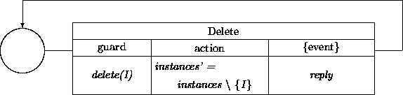
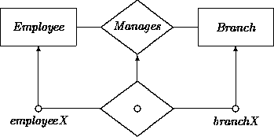
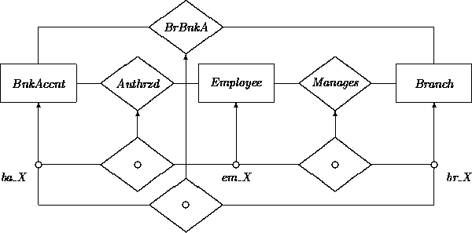

|
Chapter 8: Instances |
In previous chapters, we have modeled general properties of instances via their classes. In this chapter, we discuss methods for describing those objects that actually exist in a given target system.
Previous chapters have introduced core notions and notations for describing software systems. Most of these notions aim at introducing general ``vocabulary'' that can be used not only for describing a particular system, but also related systems. This is one reason why basic OOA techniques may be used for an object-oriented domain analysis. As discussed in Chapters 2 and 13, domain analysis is an activity that identifies generic, core concepts, frameworks, architectures, etc., that are likely to be relevant for the analysis of multiple future systems in the target domain. Nearly all OOA activities ordinarily produce at least some models that are more general than necessary for the system at hand. Indeed, this is a distinct advantage of the OO approach.
However, construction of any particular system often requires that instances of more specialized classes be put together into a system configuration. For example, most of our illustrative Account, ATM, Client, etc., classes have been fairly generic. They have not always included features that may be peculiar to the instances that populate American Bank.
The need to specialize immediately raises the question: How much class-based specialization is enough? For example, must the Account class be specialized to ABAccount, or can each account object in the American Bank system be described simply as an instance of class Account?
When one class adds attributes (perhaps with corresponding states and transitions) to those of another, then subclassing is always called for unless the added attribute may be meaningfully considered as optional ( [0:1]) in the superclass. In other cases, it is sometimes a matter of raw judgment whether a class should be divided into subclasses describing groups of instances or whether those instances should be described as variants of the same class. Initial models usually provide at least preliminary commitments about the depth and granularity of subclassing for a particular domain. Target system-specific refinements are not always bound by such commitments. Sometimes it is sensible to use deeper or even shallower hierarchies.1
1Footnote:
Similar concerns apply in the design phase, where concretely instantiable classes are defined as subclasses of analysis-level classes. Different subclasses and/or instances are constructed to reflect different ways of representing and computing static and dynamic properties. See Chapter 16.
For example, in our MailingLabel classes (Chapter 7), we might have been content to declare that all MailingLabels contain an uninterpreted string value representing postal codes. In that case, U.S., Canadian, French, etc., codes could all be accommodated without having to declare subclasses. In the other direction, we could have created one subclass per City, and grouped instances even more finely. Ultimately, we could have isolated every individual mailing label object in its own unique class.
While there can be no recipes for making decisions about when to use subclasses and when to use instances, some guidelines exist. Generally, overclassification is easier to deal with than underclassification. The extreme tactic of defining one class Object with all possible attributes listed as optional and all possible input events ignored does not get you very far in object-oriented development. On the other hand, the extreme case of defining one class per entity can be tolerated if all reasonable superclasses have also been defined. Others need only use those properties in which they are interested, by referencing the appropriate superclass. Prototype-based OO systems (e.g., the OO language SELF [3] ) implicitly take a form of this extreme position by not even supporting a class construct. There are only individuals, along with mechanisms for creating new individuals with properties similar to those of existing ones. Class-based frameworks allow simpler descriptions of commonalities among objects. However, even here, the notion that each object has a unique identity might be interpreted in part as a way of making up for the coarse granularity of most class descriptions. Unless all objects of a class share all properties and are immutable, when the specific values of a set of attributes are required, one must describe, say, ``instance XYZ_423'', rather than ``any instance of class XYZ''.
We illustrate other considerations with the ubiquitous example of whether to create class Square as a subclass of Rectangle.
Subclassing is by far the best way to subdivide sets of instances that carry additional invariant constraints. For example, it may be insufficiently precise to construct square objects only as instances of class Rectangle. Declaring a Square class allows simpler expression and exploitation of the definitional requirement that squares are rectangles with sides that are always equal.
When different subsets of instances interact with different kinds of clients or support significantly different client applications, these clients become easier to model if the instances are differentiated through subclassing. For example, if squares are drawn by special-purpose square rendering objects, then distinguishing them as different subclasses simplifies description of the different interactions. This is an application of the justification rule in Chapter 7 for subclassing on the basis of narrowed relations. If the SquareRenderer is a subclass of Renderer, then the acquaintance relation between Square and SquareRenderer specializes that between Rectangle and Renderer.
If instances of Rectangle may change their dimensions (and thus sometimes are square and sometimes not) then squareness constraints are not invariant, and the definition of a Square subclass might do more harm than good. Indeed, if the Rectangle class contains transitions that change one dimension without changing the other, a Square class should not inherit them, and cannot be defined as a subclass. State abstraction is a more useful alternative. It would be more fitting to define and employ an isSquare state in the Rectangle class to discriminate rectangles that happen to have equal sides. This state may even be defined via a class serving as the domain of an appropriate attribute.
One reasonable compromise for squares would be to define both Square and Rectangles as classes, but not to make Square a subclass of Rectangle or vice versa. They may however share some other ancestor that does not list mutative transitions. Rectangles that just happen to be square for a while would not belong to class Square. The resulting subclass structure is not always as simple or aesthetically pleasing, but can make for good pragmatics. This is entirely analogous to programming language distinctions between reals, that sometimes assume integral values, versus integers, that always do. Even though there are some deeper relations between them, they are treated as distinct unrelated types for the sake of practicality.
In the same way that a class has instances, we may consider regular classes to be instances of a metaclass named Meta. This allows all properties of regular classes to be described in a common manner. Metaclasses provide a purely declarative basis for analysis level descriptions of object management. We can summarize descriptions of classes presented in previous chapters by defining class Meta, that includes as attributes those features we have ascribed to regular classes. One possible version is as follows:

By giving Meta the attribute instances we specify that every regular class can keep track of its instances. Describing the mechanism for creating and deleting instances is now a matter of establishing service transitions:

The fresh-instance I must be initialized in accord with all constraints and defaults. There may be several variant New services that include requests to override defaults. A similar transition describes the deletion of an instance:

While we may use metaclasses to describe the construction of instances in a target system, we would also like to be able to refer to the instances more abstractly, without necessarily having to say anything about how or when they are created. To enable this, we introduce the notion of a parametric instance (PI).
Like a regular instance, a PI denotes a unique instance of a certain class which is fixed over the lifetime of a system. However, unlike a normal instance, there is no commitment about the exact identity of the instance. PIs are similar to roles (attributes) in ordinary classes in that they describe any instance that may occupy such a role. They differ only in that PIs describe ``top-level'' roles that are not necessarily listed within other classes in a system.
For example, in our banking domain, we may want to focus on the subsystem of a branch -- not a particular branch, but a generic branch. We would like the ability to refer within this system to the branch itself. We may not want to freeze the branch to a particular instance, because we want to have a description that applies to any branch. Thus, we choose to represent the branch as a PI.
We use open circles to denote parametric instances. For example, our branch PI:
Usually, the most notable features of a parametric instance lie in its relationships to other PIs. These may be expressed using parametric relation instances (PRIs), first encountered in Chapter 4. For example, to indicate that a certain unique employee manages a certain unique branch:

In addition, we may introduce a ``utility'' bank account that is associated with the branch via the relationship BranchBankAccount (abbreviated as BrBnkA). We show as well that the branch manager is the ``owner'' of the branch account in the sense that he or she is Authorized to deal with this account:

An alternative to using multiple PIs is to construct a class System that includes as attributes all stable instances in the system. A single PI of class System may then be used to represent the system. The attributes of System may be constrained using parametric relation instances in exactly the same way as is done for PIs.
Instances must be specified to populate a particular system. Description of target-system-specific instances is sometimes facilitated by subclassing. Metaclasses provide a declarative framework for describing class features and object construction and deletion. Networks of parametric instances joined by parametric relation instances express features and constraints of the instances in a target system. These allow for the construction of generic models where we need instances, but do not as yet want to commit to what these instances are.
There are few existing alternatives to the constructs described in this chapter. An exception is Embley et al [1] who introduce (in addition to instances) the notion of a class that has only a single instance. This facilitates the representation of top level notions such as ``the president of the company'', ``the personnel department'', ``headquarters'', without having to be specific about a unique president, personnel department or headquarters.
The reader interested in meta-stuff is encouraged to study [2]. A quote from its introduction:
Metaobject protocols are interfaces to the language that give users the ability to incrementally modify the language's behavior and implementation, as well as the ability to write programs within the language.